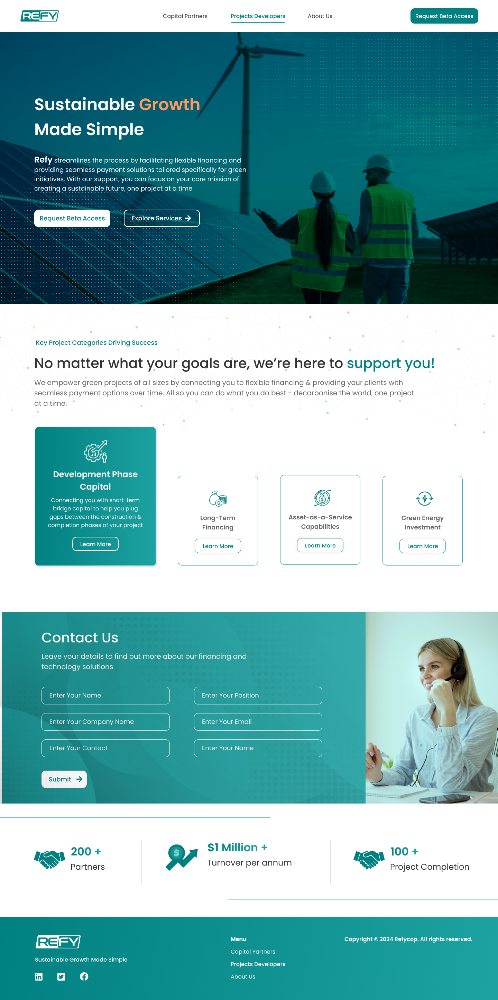

<div id="de_modal-content" class="container">
    <div class="row g-5">
        <div class="col-lg-8">
            <div class="row g-4">
                <div class="col-lg-12 item">
                    
                </div>
            </div>
        </div>

        <div class="col-lg-4 de_project-info">
            <h3>Self Hosted Video</h3>
            <p>As a designer, I've meticulously crafted a dynamic landing page in Figma for a renewable energy finance and payment service provider "refy". The design seamlessly integrates modern aesthetics with intuitive functionality to offer visitors a comprehensive overview of renewable energy financing options.

                The landing page opens with a striking hero section featuring captivating imagery of renewable energy sources such as wind turbines and solar panels, immediately conveying the company's commitment to sustainability. Clean typography and a sophisticated color palette enhance readability while reinforcing the brand's professionalism and reliability.
                
                Navigation is streamlined with a user-friendly layout, guiding visitors effortlessly to essential sections such as financing solutions, payment plans, and client testimonials. Strategic use of whitespace and concise messaging ensures clarity and encourages exploration, allowing visitors to find the information they need quickly and efficiently.
                
                Finance solution section provide detailed descriptions of various financing options available, accompanied by clear visuals and interactive tools to help users understand the benefits and requirements of each plan. Transparent pricing information and flexible payment options are prominently displayed, empowering visitors to make informed decisions.
                
                Integrated contact forms and prominent call-to-action buttons prompt visitors to take the next step, whether it's requesting a consultation, applying for financing, or accessing customer support services. Trust-building elements such as client testimonials and industry affiliations reinforce the company's expertise and credibility.
                
                The design is fully responsive, adapting seamlessly to different screen sizes and devices to ensure a consistent user experience across desktops, tablets, and mobile phones. Thoughtful animations and subtle transitions add a layer of sophistication, enhancing engagement and user satisfaction.</p>
           
            <div class="de_project-details">
                <div class="d-field">
                    <i class="fa fa-user-o"></i>Client: <span>RefyCop</span>
                </div>
                <div class="d-field">
                    <i class="fa fa-file-text-o"></i>Type: <span>Branding</span>
                </div>
                <div class="d-field">
                    <i class="fa fa-calendar-o"></i>Year: <span>2024</span>
                </div>
            </div>
            <div class="spacer-30"></div>
        </div>
    </div>
</div>